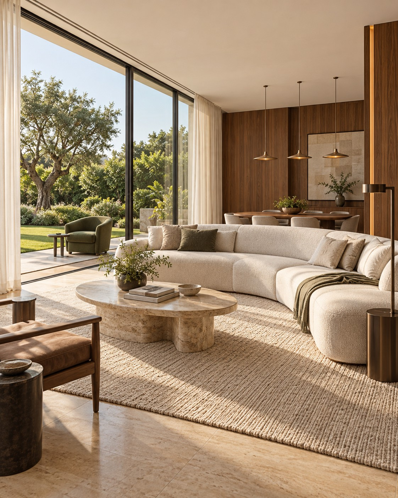

Estou construindo ou reformando.
Planeje iluminação, cortinas e som enquanto a obra está em andamento. A Domus avalia o que você quer controlar e a infraestrutura necessária.
Conversar sobre minha obraDomus Lighting, Indaiatuba
Iluminação, persianas, climatização e áudio integrados. Projetos para casas em obra ou já prontas.

Comece o dia com luz natural.As cortinas abrem no horário que você escolher.Ambiente ilustrativo gerado por IA
Seu projeto começa aqui
Conte onde fica a casa e o que você quer automatizar. A Domus conversa com você sobre as possibilidades do projeto.
Preencha os campos e confira sua mensagem. Depois, é só abrir o WhatsApp e enviar para a equipe.
Abrir as persianas pela manhã. Ajustar a iluminação para jantar. Escolher o som que acompanha o encontro.
A Domus conecta essas possibilidades ao seu projeto, aos ambientes e ao jeito como você vive.
Conheça as soluções que podem fazer parte da sua casa.
Controle a iluminação e componha cenas para diferentes momentos: trabalhar, receber ou relaxar. A escolha das soluções acompanha o uso de cada ambiente.
Integre a abertura e o fechamento das persianas e cortinas à rotina da casa. Luz natural e privacidade podem fazer parte de uma mesma cena.
Escolha o som de cada ambiente a partir do espaço e de como você quer usá-lo, seja para ouvir música ou assistir a filmes.
Inclua o controle do ar-condicionado nas possibilidades da automação. A integração depende dos equipamentos e das necessidades do projeto.
Conheça opções para o acesso à casa e escolha a solução adequada à porta e à rotina de quem mora ali.
Reúna as soluções em um projeto que considere a casa como um todo. Equipamentos, ambientes e cenas são definidos a partir do que você precisa.
Planeje iluminação, cortinas e som enquanto a obra está em andamento. A Domus avalia o que você quer controlar e a infraestrutura necessária.
Conversar sobre minha obraConte o que você quer mudar na rotina. A gente conversa sobre os ambientes e avalia as soluções que podem ser incorporadas à sua casa.
Conversar sobre minha casaAlgumas dúvidas sobre começar um projeto de automação.
O projeto pode considerar os ambientes e as soluções que fazem sentido agora. Conte suas prioridades para a gente avaliar as possibilidades e uma eventual expansão.
Existem possibilidades para casas prontas. A escolha depende dos equipamentos, da infraestrutura e do que você quer controlar. A conversa com a Domus ajuda a entender o que é adequado ao seu caso.
Sim. Eles podem fazer parte de uma mesma cena, como assistir a um filme ou receber visitas. A combinação depende dos equipamentos e das condições da casa.
Conte quais ambientes você usa, o que quer controlar e se a casa está em obra ou já pronta. A Domus conversa com você sobre as soluções adequadas ao que você precisa.
Preencha o formulário nesta página com seu nome, cidade, etapa da casa e interesse. Confira a mensagem e envie pelo WhatsApp. A equipe conversa com você sobre o projeto e o próximo passo.
Conte o que você quer automatizar e peça um orçamento para sua casa.